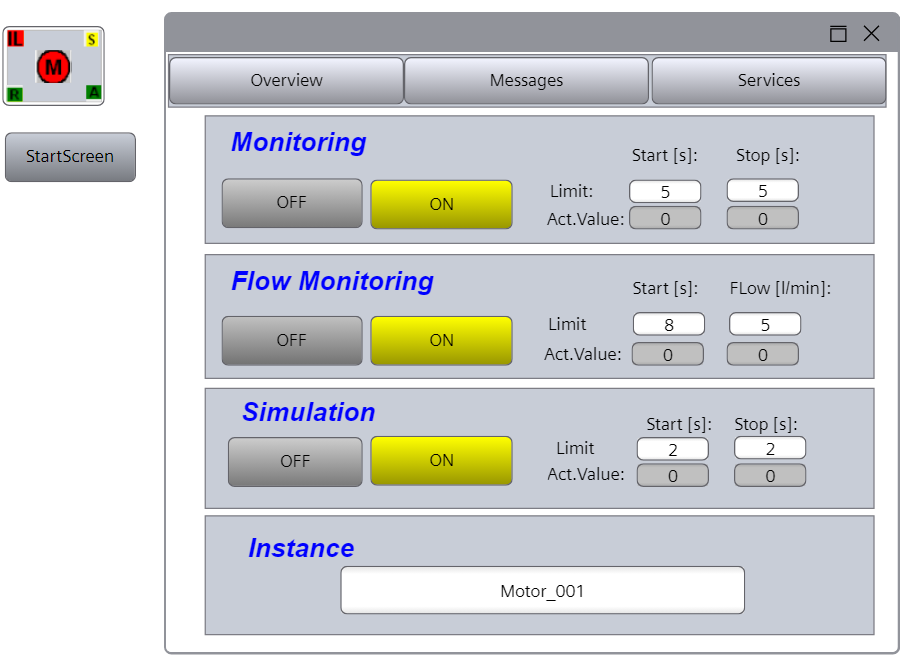
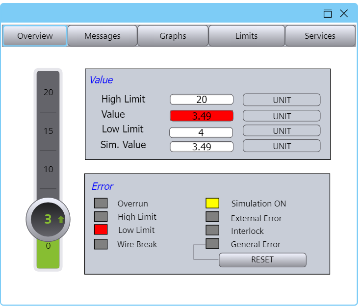
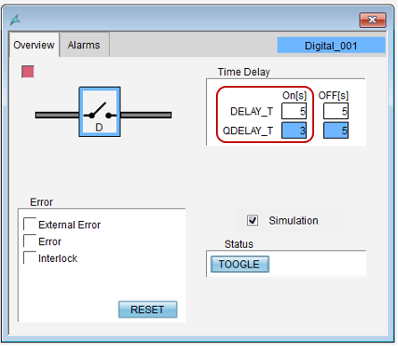

Migration d'une bibliothèque de fonctions vers WinCC Unified et WinCC V7.5 Migrating a function library to WinCC Unified and WinCC V7.5
Modernisation d'une bibliothèque d'automatisme Siemens — blocs PLC en SCL et faceplates HMI développés sous WinCC Comfort — vers les environnements de dernière génération, en garantissant la continuité des fonctionnalités existantes.
Modernisation of a Siemens automation library — PLC blocks in SCL and HMI faceplates built in WinCC Comfort — to the latest-generation environments, while preserving all existing functionality.
ContexteContext
Les bibliothèques de fonctions permettent de réutiliser, d'un projet à l'autre, des objets standard (moteurs, vannes, mesures analogiques, entrées TOR…) avec leur logique automate et leur faceplate de conduite. La bibliothèque existante, développée sous WinCC Comfort, devait être rendue compatible avec WinCC Unified (TIA Portal) et avec WinCC V7.5 (Step7 / WinCC Explorer).
Function libraries make it possible to reuse standard objects (motors, valves, analogue measurements, digital inputs…) across projects, together with their PLC logic and operator faceplate. The existing library, built in WinCC Comfort, had to be made compatible with WinCC Unified (TIA Portal) and WinCC V7.5 (Step7 / WinCC Explorer).
RéalisationImplementation
1. Migration vers WinCC Unified1. Migration to WinCC Unified
- Création d'une bibliothèque de projet et structuration des données en UDT.
- Conception des faceplates (vue d'ensemble, messages, courbes, seuils, services) et des pop-ups de navigation.
- Intégration et adaptation des programmes SCL, ajout de fonctions avancées en JavaScript.
- Tests et validation de chaque objet en simulation.
- Creation of a project library and data structuring with UDTs.
- Design of the faceplates (overview, messages, trends, limits, services) and navigation pop-ups.
- Integration and adaptation of the SCL programs, advanced features added in JavaScript.
- Testing and validation of each object in simulation.


2. Migration vers WinCC V7.52. Migration to WinCC V7.5
- Migration du programme SCL de TIA Portal V19 vers Step7.
- Configuration de la communication entre Step7 et WinCC Explorer et des variables migrées.
- Tests et validation des faceplates.
- Migration of the SCL program from TIA Portal V19 to Step7.
- Configuration of communication between Step7 and WinCC Explorer and of the migrated tags.
- Testing and validation of the faceplates.
